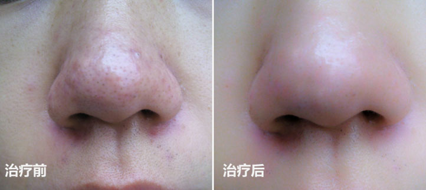

酒糟鼻的疗效对比图Efficacy comparison chart of rosacea
- 浅表型酒糟鼻
- 深在型酒糟鼻
- 鼻赘型酒糟鼻
- 
临床表现：鼻及其周围皮肤红斑，初为阵发性，伴毛细血管扩张。
治疗要点：Vbeam 595nm染料激光+中药倒膜
临床表现：在红斑的基础上，出现成批、大小不等的红色丘疹、脓疱，迁延反复
治疗要点：划痕手术治疗
临床表现：晚期患者鼻头肥大增生呈结节状，表面毛孔扩张，毛细血管扩张明显
治疗要点：鼻赘手术
Vbeam595nm染料激光：血红蛋白选择性地吸收激光能量。既可控制凝血和血管破裂又可避免损伤周围组织。选用不同配方的中药倒膜配合激光治疗达到最佳效果。内分泌也是酒糟鼻的成因之一 通过服用根据病人体质调整的中药，有针对性的调节患者的内分泌失调问题。
深在型酒糟鼻患者单靠医用物难以达到治疗的目的，必须通过划痕手术的方法恢复鼻部的形态。酒糟鼻划痕手术可破坏扩张的毛细血管及增生的皮脂腺和结缔组织，使毛囊上皮细胞再生。创面愈合，形成正常或接近正常的表皮，从而达到治疗的目的。
鼻赘手术：切除大部分坛生的结缔组织，直到真皮浅层，保留部分毛囊，通过残留的毛囊鳞状上皮向两侧再生，达到修复创面而不留下疤痕的目的。
2012年7月4日下午，桂林的酒糟鼻患者邓先生专程来到南宁中山医院，送锦旗感谢皮肤科专家吴主任的精心治疗，他五六年的顽疾酒糟鼻终于喜获治愈。锦旗上四个大字"妙手回春"代表着邓先生对这两位医生的由衷感激之情。
柳主任给她用了一个疗程后，效果明显好转，3个疗程以后鼻子基本恢复正常，后期还需加一些内服药物的调理，使康复效果更加显著，笔者在采访的时候吴小姐很开心很激动的说："这次是真的治好了，感谢南宁中山医院柳主任！"
★中国皮肤病医学会会员
★中国皮肤病科研成果一等奖获得者
★中国皮肤研究院理事
★中华医学会皮肤性病学会委员


★我国皮肤病专业领域内的权威专家
★中国知网及相关学术会议发表皮肤病专业科研论文十余篇，曾在国际、国内专业学术杂志发表论文二十余篇,多次应邀出席国际皮肤病专业学术交流,并且多次参加主编大型专业学术著作,创造出个人独具一格的理论体系

★曾在国家核心杂志《皮肤病与性病》
★中国知网及相关学术会议发表皮肤病专业科研论文十余篇,多次被评为复旦大学附属华山医院"优秀个人"和"优秀带教"荣誉称号。
在皮脂0溢出的基础上，由于体内外各种有害因子的作用，使患部血管舒缩神经功能失调，毛细血管长期扩张所致。
在皮脂0溢出的基础上，由于体内外各种有害因子的作用，使患部血管舒缩神经功能失调，毛细血管长期扩张所致。
在皮脂0溢出的基础上，由于体内外各种有害因子的作用，使患部血管舒缩神经功能失调，毛细血管长期扩张所致。
在皮脂0溢出的基础上，由于体内外各种有害因子的作用，使患部血管舒缩神经功能失调，毛细血管长期扩张所致。
在皮脂0溢出的基础上，由于体内外各种有害因子的作用，使患部血管舒缩神经功能失调，毛细血管长期扩张所致。
在皮脂0溢出的基础上，由于体内外各种有害因子的作用，使患部血管舒缩神经功能失调，毛细血管长期扩张所致。
鼻部刚出现潮红，表面油腻发亮，并不是很严重，未能引起足够的重视，在没有医生的指导下，盲目医治，虽一开始有效，之后越来越严重，耽误了最好的时机。
很多医治产品只注重表象，用普通的有激素的外用霜抹于患处，初期时有一定效果，但是不注意从病例根处出发，治标不治本，酒糟鼻依然再次复发。
大部分酒糟鼻患者，希望在短时间内鼻子变得光滑如初，选择了"含激素"的产品，看起来好像有效果。副作用：复发率极高，药物成瘾，依赖性很强，造成皮肤萎缩，角质变薄受损，或毛细血管扩张等新的损害。
许多酒糟鼻患者在经过多次治疗，钱没少花，方法也没少用，就是没治好，而且越来越严重，从心理上失去了信心，从行动上放弃了医治。其实酒糟鼻是可以康复的，只要牢记这八个字"正确医治，积极配合"，酒糟鼻一定会得以康复。